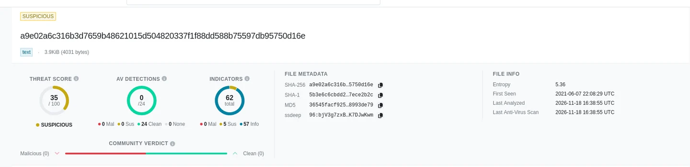

Malicious VBA
- Categoria
- Desafios
- Caso
- VBA-02
- Registro
- Análise estática
Resumo
Análise de uma macro encontrada em um documento anexado a uma mensagem sobre fatura.
Passo a passo da investigação
Enunciado
Um funcionário recebeu um documento suspeito anexado a uma mensagem
sobre fatura. A análise estática identificou comportamento de rede,
gravação de arquivos e interação com processos. > Cuidados de
segurança: analise o arquivo como texto no Notepad++ ou em
outra ferramenta segura. Não execute a macro fora de um ambiente
isolado. Arquivo analisado:
/root/Desktop/ChallengeFiles/invoice.vb Desafio
preparado por: @RussianPanda
Procedimento de análise
- Abri o arquivo como texto e localizei trechos codificados em hexadecimal na macro.
- Usei o CyberChef para decodificar os valores e reconstruir as strings.
- Consultei o arquivo no Hybrid Analysis e pesquisei o hash no
VirusTotal. Hash SHA-256:
a9e02a6c316b3d7659b48621015d504820337f1f88dd588b75597db95750d16e

Respostas do desafio
1. Comunicação externa
2. Artefato gravado
Artefato observado: dropped.exe.
3. Qual objeto é usado para estabelecer a conexão HTTP?
Resposta: MSXML2.ServerXMLHTTP
4. Qual User-Agent é enviado?
Resposta: o método é GET e o User-Agent
é Mozilla/4.0 (compatible; MSIE 6.0; Windows NT 5.0).
5. Qual objeto permite ler ou gravar arquivos de texto e binários?
Resultado: a amostra apresentava indícios de manipulação de arquivos.
6. Atividade sobre processos
Resultado: a macro fazia referência a uma interface associada à atividade de processos do Windows.
Exercício simulado. Algumas capturas foram recortadas ou tiveram campos ocultados.